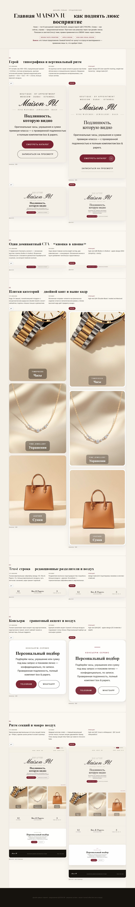
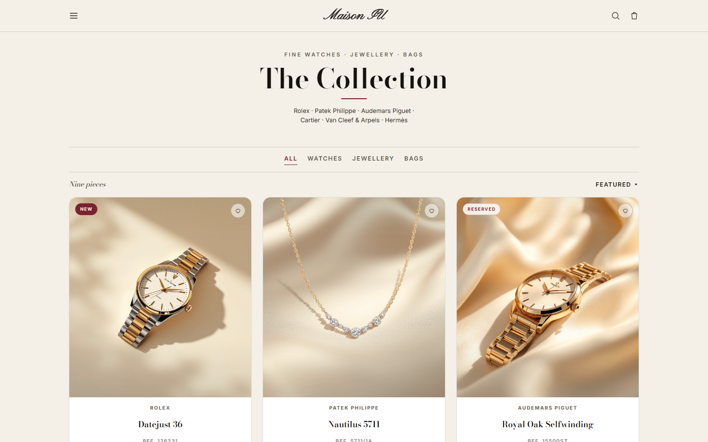

Главная — 6 улучшений
Типографика героя, доминантный CTA, плитки категорий, trust-строка, консьерж-блок, ритм секций.
Открыть ДО | ПОСЛЕ →

Каталог + Карточка — 7 улучшений
Выравнивание цен, «тихая» фурнитура, изображения/vignette, галерея PDP, спеки, микродетали CTA, моушн.
Открыть ДО | ПОСЛЕ →